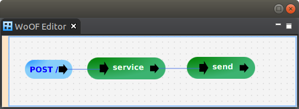

This tutorial demonstrates using Cats (or more specifically Cats Effect).
To focus on Cats, this tutorial uses a simple application that retrieves a message from database using doobie via Cats Effect.
The Cats effect to retrieve a message from the database is the following:
object MessageRepository {
def findById(id: Int)(implicit xa: Transactor[IO]): IO[Message] =
sql"SELECT id, content FROM message WHERE id = $id".query[Message].unique.transact(xa)
}
The effect is tested with the following code:
"MessageRepository" should "have data" in {
implicit val xa: Transactor[IO] = setupDatabase
val message = MessageRepository.findById(1).unsafeRunSync
assert(message.content == "Hi via doobie")
}
Note: the test is not comprehensive, however, demonstrates testing the effect in isolation.
To integrate Cats into a First-Class Procedure add the following to the pom.xml:
<dependency>
<groupId>net.officefloor.scala</groupId>
<artifactId>officescala_cats</artifactId>
</dependency>
This will setup the configured procedures to handle the returned IO from functions. In this case, the following:
def service(request: CatsRequest)(implicit xa: Transactor[IO]): IO[CatsResponse] =
for {
message <- MessageRepository.findById(request.id)
response = new CatsResponse(message.content + " and Cats")
} yield response
This function looks up the message in the database, creates a response and then returns the IO. OfficeFloor then:
This allows Cats Effect to be used for writing modular functions of the application. Then lets OfficeFloor compose these functions graphically together to form the application.
As per the WoOF configuration of the application:
The next configured procedure sends the response:
def send(@Parameter message: CatsResponse, response: ObjectResponse[CatsResponse]): Unit = response.send(message)
To enable the Transactor to be injected, the following is the application.objects configuration:
<objects>
<managed-object source="net.officefloor.tutorial.catshttpserver.TransactorManagedObjectSource" />
<managed-object source="net.officefloor.jdbc.ConnectionManagedObjectSource" />
<managed-object source="net.officefloor.jdbc.h2.H2DataSourceManagedObjectSource">
<property name="url" value="jdbc:h2:mem:demo" />
<property name="user" value="SA" />
<property name="password" value="password" />
</managed-object>
</objects>
The Connection is provided by the H2 managed object. The Transactor managed object then wraps the Connection in a Transactor:
class TransactorManagedObjectSource extends AbstractManagedObjectSource[Indexed, None] {
implicit val cs = IO.contextShift(ExecutionContexts.synchronous)
override def loadSpecification(specificationContext: AbstractAsyncManagedObjectSource.SpecificationContext): Unit = ()
override def loadMetaData(metaDataContext: AbstractAsyncManagedObjectSource.MetaDataContext[Indexed, None]): Unit = {
metaDataContext.setManagedObjectClass(classOf[TransactorManagedObject])
metaDataContext.setObjectClass(classOf[Transactor[IO]])
metaDataContext.addDependency(classOf[Connection])
}
override def getManagedObject: ManagedObject = new TransactorManagedObject()
}
class TransactorManagedObject(implicit cs: ContextShift[IO]) extends CoordinatingManagedObject[Indexed] {
var transactor: Transactor[IO] = null
override def loadObjects(objectRegistry: ObjectRegistry[Indexed]): Unit = {
val connection = objectRegistry.getObject(0).asInstanceOf[Connection]
this.transactor = Transactor.fromConnection[IO](connection, Blocker.liftExecutionContext(ExecutionContexts.synchronous))
}
override def getObject: AnyRef = transactor
}
Note that OfficeFloor manages the executing thread via Thread Injection so synchronous execution is preferred.
This tutorial provides further information on configuring managed objects.
The following test demonstrates using IO to service a HTTP request:
"HTTP Server" should "get message" in {
setupDatabase
withMockWoofServer { server =>
val request = mockRequest("/")
.method(httpMethod("POST"))
.header("Content-Type", "application/json")
.entity(jsonEntity(new CatsRequest(1)))
val response = server.send(request)
response.assertResponse(200, jsonEntity(new CatsResponse("Hi via doobie and Cats")))
}
}
The next tutorial covers using ZIO.